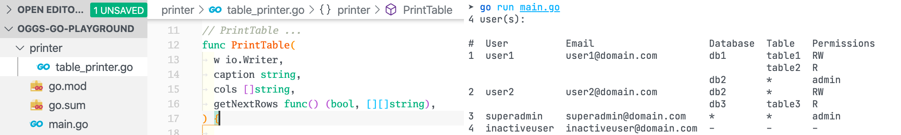

GoSMig: a tiny, type-safe way to build your own SQL database migration CLI in Go 2025-10-23T23:07:19+03:00 Write SQL database migrations in Go with strong typing, zero non-stdlib dependencies, and build your own migration CLI with minimal boilerplate. database/sql and sqlx supported out of the box.▸ read more#Go #CLI #database #SQL #migrations
COVID-19 pandemic: Visual data explorer using Python and Streamlit 2021-12-31T16:33:55+02:00 Visually explore COVID-19 pandemic data in browser using Python, Pandas, Altair and Streamlit▸ read more#Python #Streamlit
Display tables in the CLI using just the Go standard library 2020-08-12T19:52:15+03:00 Print data as minimalist plain-text tables using just the text/tabwriter package, without any third-party library▸ read more#Go #CLI